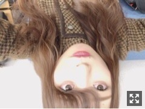
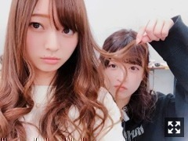
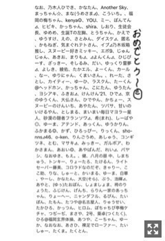
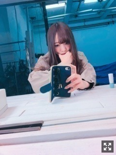

同じ曲をずっと流してます、これで５回目
みなさまこんにちは！！
乃木坂46 ３期生の
梅澤美波です！！

どもども
今日は逆さまです
昨日の夜ね、
ノートに文字をスラスラ書いてまして
先のかなり尖った
細いボールペンだったのだけど
書き終わってペンのヘッドを押そうとしたら
間違えてペン先を思いっきり押してしまって
痛い〜と１人で丸まってました（笑）
学生の時よくやって
親指にプスプス赤いポツポツができたなあ（笑）
最近は舞台に向け頑張っていますよ〜！
銀河劇場は
舞台を観劇した際に
何回も行ったことがあるけど
あのステージに今度は私も立てるのが
とても嬉しいです☺︎
楽しみだなあ〜
来てくださる皆様は
楽しみにしててね∠( ˙-˙ )／
それでね、先日
能條さんが出演されているミュージカル
「少女革命ウテナ〜白き薔薇のつぼみ〜」
を観劇してきました！！
ミュージカルを観たのは初めてだったんですが、会場の一体感というか
音楽で包まれるあの空間が
とても居心地が良くて物凄く素敵な舞台でした！
感動したなあ〜
能條さんがとてもかっこよくて
なにより歌声にすごく癒されました(；；)
歌声大好きなんだあ(；；)
あの曲が頭から離れないの！
もう一回聴きたい( .. )
カーテンコールの時のトークが
すっごく面白かった〜
もう１回観たいなあ〜

みんてぃー
リップ塗ってないからいつもとちがう
また焼肉いこーあやー
前回の手誰でしようクイズ
正解はあやでした〜！ぱちぱち
正解した人梅ポイントあげる〜（笑）
特になにかあるわけじゃないんだけど( .. )（笑）
コメント見てたらみんなすごい答えてくれてたから正解した人の名前書いちゃおっと
(もしかしたら読みこぼしとかあるかもしれません、許してください( .. )（笑）すみません(；；)

長くなっちゃったから画像で( .. )
2人書いてた人はダメだよ〜（笑）
私の気まぐれにお付き合いいただいて
ありがとうございました∠( ˙-˙ )／
またいつかやるかもね！（笑）
いつかの空です。綺麗！
いつも本当にありがとうございます。☺︎
たくさんの元気をもらっています！
このお仕事をしていると
どこか素の自分を奥底に抑え込んで
周りの目を気にしながら
活動してしまう自分がいて
加入当時よりも
色々な事を知った今、
自分の行動言動に制限をかけるようになって
当たり障りのない言葉や
行動しかできなくなって
色んな思いをすることも増えたけど
でも、どんな事を思っても
ファンの皆様がいてくれればそれでよくて
もちろん自分のために
自分がやりたいことのために頑張ろうって
思うこともあるんだけど
最終的にたどり着く先は
ファンの皆様の顔！喜ぶ顔！
こいつ何くさいこと言ってんだって
笑ってくれてもいいです（笑）
でも本当のことなんだよね∠( ˙-˙ )／
お仕事が決まれば早く伝えたくなって
もどかしい気持ちになったり、
握手会のために服を買いに行ったり
選んだりする時間が大好きだし、
推しタオルやサイリウムを
見つけるのが大好きだし
全てここに繋がってる！って思う！
オーディションのshowroomの時から、
顔も分からない私に
１２番ちゃんが好き！って
たくさんの勇気をくれて
ファンの方っていう存在が
なんて暖かい方達なんだろうって
その時初めて知って
その時から
絶対この人たちを大切にする！
って決めたの！
とんでもないパワーを秘めてる！
応援してくださる方って！
皆様がいるから私は無敵！
何があっても倒れずに立ってられる！
ファンの方と二人三脚で
年齢的にもアイドルとしても大切で貴重な今を過ごしたいです
私は頑張ります☺︎
今は自分の力をつけ時！
梅澤推してて楽しくてたまんねー！って
思ってもらえるように
梅澤がんばるぜ！( ˙-˙ )౨
だからみててくれ
必ず恩返しするから、
待っていてください。☺︎
２０枚目シングル！
生駒さん最後のシングルです。
近くで活動出来ることは少ないかもしれないけど
残りの時間でたくさんの事を吸収していけたらいいなって思っています。
そして３期生から４人も選抜！
本当におめでとう！
同期としてとても嬉しく誇りに思います。
色んなプレッシャーとか
本人達にしか分からない感情があると思うけど
いつでも支えられるように待ってるよ☺︎
活躍が楽しみ！
私は今はまだ自分の口から
言える存在ではないと思う、だから
次はチャンスが来るように
今は私も頑張らないと！という気持ちです
色んな感情は人間だから持っているけど
マイナスな気持ちは１ミリもない！
私は私らしく、人と比べすぎず
自分の頑張るべき場所で
いつまでも謙虚な心を忘れず
頑張っていきます
どうか、これからもよろしくね
長くなってごめんなさい！
言葉って難しいよ〜( .. )
書くか迷いましたが
皆様優しいから、
嬉しいことに案の定たくさんのコメントがきてて
書くことにしたよ∠( ˙-˙ )／
またどこかで書きます！

てへっ
それじゃあまた更新します！
今週末の握手会
楽しみだなあ〜
おやすみね〜
いつもありがとうございます！
どんな現実も受け入れて、私はまだ個人の力をつける時だと思います
笑顔で頑張るぞー！！
Original：https://www.nogizaka46.com/s/n46/diary/detail/43601?ima=4955&cd=MEMBER